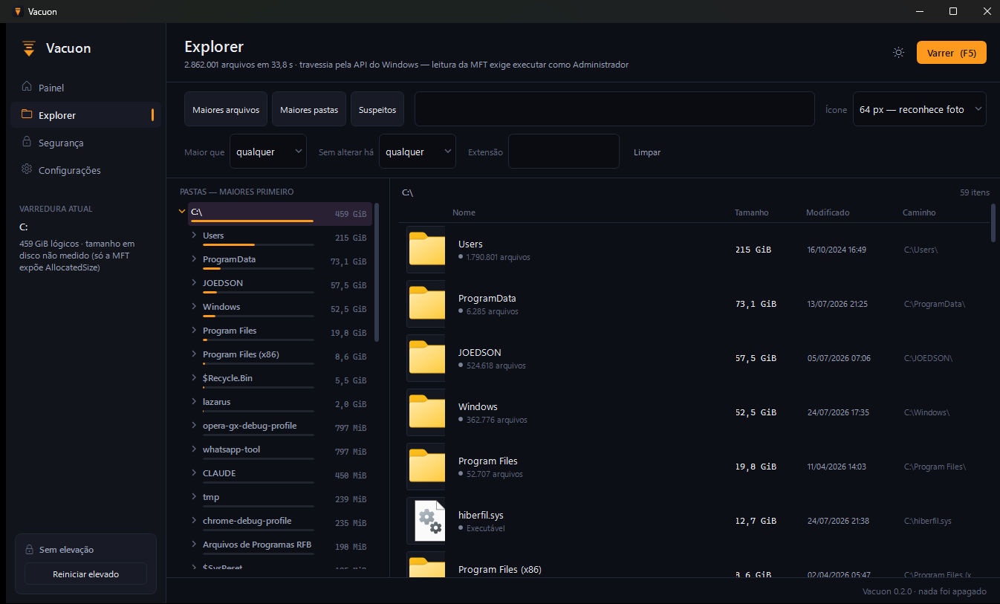

The Explorer: the folder tree, the files inside it, and a thumbnail of what each one actually is.
What it does
Finds where the space went
Reading the Master File Table directly indexed 2.34 million files in 11.5 seconds on the machine it was built on. Without Administrator it still works, through the slower Windows API — and says which path it used.
Shows what it is before you delete it
Thumbnails of the real content in six sizes, media details, and a preview panel — so you can tell which of five large renders is the final one without opening any of them.
Duplicates, look-alikes and a treemap
Identical files by hash, pictures that merely resemble each other by fingerprint, and the whole volume drawn as boxes sized by what they occupy.
Cleans by rule, and reversibly
A rule catalogue that calls Microsoft's own tools where the work belongs inside Windows, a quarantine it can restore from, and a live monitor reading the NTFS change journal.